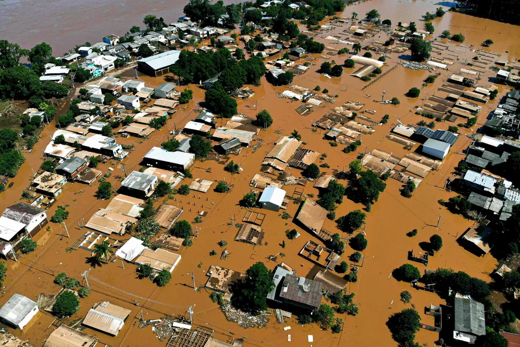

Investimento de R$ 1,2 milhão do governo viabiliza desassoreamento de arroio em Canoas
Criado por Saúde de RS
Com a implementação do programa Desassorear RS no município de Canoas, o governo do Estado viabilizará o desassoreamento do Arroio Brigadeiria, no bairro Olaria, que faz limite com a cidade de Cachoeirinha. O lançamento da obra pela Secretaria de Desenvolvimento Urbano e Metropolitano (Sedur) ocorreu, na segunda-feira (26/5), com as presenças do secretário da pasta, Marcelo Caumo; do prefeito do município, Airton Souza; do vice-prefeito, Rodrigo Busato; além de autoridades do legislativo federal e municipal.
O Estado irá investir R$ 1,2 milhão no trabalho de desassoreamento na cidade, fortemente impactada pela enchente de 2024, beneficiando a comunidade das imediações, que sofreram grande prejuízos. Na ocasião, o secretário Marcelo Caumo destacou que, desde a enchente, o governo estadual adota uma série de ações que englobam o Plano Rio Grande, programa de Estado liderado pelo governador Eduardo Leite para reconstruir o Rio Grande do Sul e torná-lo ainda mais forte e resiliente, preparado para o futuro. “Dentre ações do Plano está o programa Desassorear, Eixo 1, que integra a Sedur e, assim como aqui em Canoas, atende a outros 153 municípios que estiveram em situação de emergência ou calamidade. É um programa que procura prestar apoio aos municípios por meio de ações de desassoreamento, contando com investimento de mais de R$ 300 milhões pelo Estado, para fazer frente às enxurradas, prevenir melhor possíveis cheias e trabalhar a partir da previsibilidade desses eventos”, ressaltou Caumo.